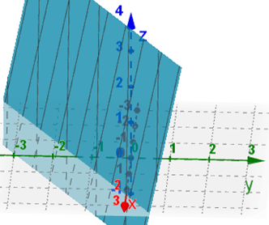
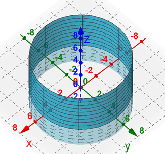
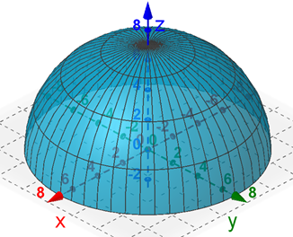

On this page, you will learn to:
- Express surfaces using parametric equations.
When working with line integrals, we have seen how it is often necessary to parameterize a curve using some vector function \(\vec{r}(t) = \langle x(t),y(t),z(t) \rangle \). Can we do the same kind of thing with surfaces? To express a surface \(S\) in \(\mathbb{R}^3\), we will need to use two parameters, which we will often call \(u\) and \(v\). This can be done in several ways, depending on the type of surface. While certianly not an exhaustive summary, let's look at a few cases.
Rectangular Parameterizations
For surfaces that can be expressed explicitly as \(z = g(x, y)\), we can use the parameterization \(x = u\), \(y = v\), and \(z = g(u, v)\). For example, consider the plane surface \(S\) given by \(3x - 5y + z = 7\). We can easily solve this for \(z\) to get \(z = 7 - 3x + 5y\). Then we could describe \(S\) using the parameterization \(\vec{r}(u, v) = \langle u,v,7 - 3u + 5v \rangle\).
We can graph these parameterized surfaces using GeoGebra (opens in new window) [https://www.geogebra.org/calculator] using the 3D Calculator mode. We would then need to use the following command to graph the parameterized surface.
Surface(<expression>, <expression>, <expression>, <variable 1>, <start>, <end>, <variable 2>, <start>, <end>)
For the above example, we would enter the expression surface(u, v, 7 - 3u + 5v, u, -5, 5, v, -5, 5) into the GeoGebra command line which will give the following graph. You can choose different start/end values for each variable rather than \(\pm 5\). This graph should match the plane equation \(3x - 5y + z = 7\).

If you would prefer using Desmos 3D (opens in new window) [https://www.desmos.com/3d], then you could enter the expression (u, v, 7 - 3u + 5v) and then adjust the inequalities for u and v that appear below the command line.
Note that in general, we can parameterize a surface this way as long as you can isolate one variable (it doesn't have to be \(z\)). So, if you can rewrite a surface equation as \(x = g(y,z)\), then we can let \(u = y\) and \(v = z\) and follow a similar process.
Cylindrical Parameterizations
Surfaces that can be expressed using polar expressions, such as cylinders and cones, can be parameterized using cylindrical coordinates where \(u = \theta\) and \(v = z\). For example, consider the cylindrical surface \(S\) given by \(x^2 + y^2 = 25\). In the \(xy\)-plane, this is just a circle centered at the origin with radius 5, which we could parameterize as \(\vec{r}(t) = \langle 5\cos(t), 5\sin(t) \rangle \). However, this surface in 3D space is a cylinder parallel to the \(z\)-axis with circular radius 5. So we could parameterize \(S\) as \(\vec{r}(u,v) = \langle 5\cos(u),5\sin(u), v \rangle\) where \(0 \le u \lt 2\pi\) and \(-\infty \lt v \lt \infty\). Notice that this is the same parameterization as the circle with an additional \(z\) component. Think of this as all the circles of radius 5 with a height \(v\) above/below the \(xy\)-plane. We could graph this using GeoGebra by entering surface(5 cos(u), 5 sin(u), v, u, 0, 2π, v, -5, 5) or using Desmos by entering (5 cos(u), 5 sin(u), v) and then modifing the u and v inequalities.

Notice that we are still graphing these cylindrically parameterized surfaces using a \((x(u,v), y(u,v), z(u,v))\) format. We are just converting the \(x\) and \(y\) components to polar using the \(x = r\cos(\theta)\) and \(y = r\sin(\theta)\) conversion equations. Also, be aware that if the surface is oriented about a different axis, we can always represent the variable of that axis as \(v\) and use the \(\cos(u)\) and \(\sin(u)\) expressions to describe the other two variables. So for example, the cylinder \(y^2 + z^2 = 16\) could be expressed as \(\vec{r}(u,v) = \langle v, 4\cos(u), 4\sin(u) \rangle\).
Spherical Parameterizations
Surfaces that can be expressed spherically can be parameterized using \(u = \phi\) and \(v = \theta\). For example, consider the surface \(S\) defined by \(x^2 + y^2 + z^2 = 49\) above the \(xy\)-plane. In other words, \(S\) is the upper hemisphere with radius 7 and \(z \ge 0\). We can express the \(x\), \(y\), and \(z\) compononets of the surface using the conversion equations \(x = \rho \sin(\phi)\cos(\theta)\), \(y = \rho \sin(\phi)\sin(\theta)\), and \(z = \rho \cos(\phi)\). In spherical coordinates, this would be all the points \((\rho, \phi, \theta)\) where \(\rho = 7\), \(0 \le \phi \le \pi/2\), and \(0 \le \theta \lt 2\pi\). Thus, we could parameterize \(S\) as \(\vec{r}(u,v) = \langle 7\sin(u)\cos(v), 7\sin(u)\sin(v), 7\cos(u) \rangle\) where \(0 \le u \le \pi/2\) and \(0 \le v \lt 2\pi\). Using the GeoGebra command surface(7 sin(u) cos(v), 7 sin(u) sin(v), 7 cos(u), u, 0, π/2, v, 0, 2π), we get the following graph.

In Desmos, entering (7 sin(u) cos(v), 7 sin(u) sin(v), 7 cos(u)) with 0 ≤ u ≤ π/2 and 0 ≤ v ≤ 2π would generate the same graph.
The following vidoe gives a few examples of how we can parameterize given surfaces.